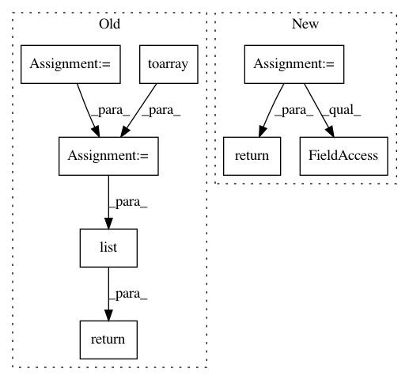

73675264dd48387319f62780b52d81389016cc1f,neurosynth/base/dataset.py,FeatureTable,get_features_by_ids,#FeatureTable#Any#Any#Any#Any#,602
Before Change
def get_features_by_ids(self, ids=None, threshold=0.0001, func="sum", get_weights=False):
""" Returns features that mach to ids"""
id_indices = np.in1d(self.ids, ids)
data = self.data.toarray()
ids_weights = reduce(lambda x,y: x+y, data[id_indices,:])/len(id_indices)
above_thresh = (ids_weights >= threshold)
features_to_keep = np.array(self.feature_names)[np.where(above_thresh)]
if get_weights:
return dict(zip(features_to_keep, list(ids_weights[above_thresh])))
else:
return features_to_keep
After Change
def get_features_by_ids(self, ids=None, threshold=0.0001, func=np.mean, get_weights=False):
""" Returns features for which the mean loading across all specified studies (in ids)
is >= threshold. """
weights = self.data.ix[ids].apply(func, 0)
above_thresh = weights[weights >= threshold]
return above_thresh if get_weights else list(above_thresh.index)
In pattern: SUPERPATTERN
Frequency: 3
Non-data size: 8
Instances
Project Name: neurosynth/neurosynth
Commit Name: 73675264dd48387319f62780b52d81389016cc1f
Time: 2014-03-24
Author: tyarkoni@gmail.com
File Name: neurosynth/base/dataset.py
Class Name: FeatureTable
Method Name: get_features_by_ids
Project Name: RaRe-Technologies/gensim
Commit Name: f5ba1df0169bf9f3e9e82d409c528d0642494665
Time: 2011-05-15
Author: radimrehurek@seznam.cz
File Name: src/gensim/similarities/docsim.py
Class Name: MatrixSimilarity
Method Name: getSimilarities
Project Name: neurosynth/neurosynth
Commit Name: 73675264dd48387319f62780b52d81389016cc1f
Time: 2014-03-24
Author: tyarkoni@gmail.com
File Name: neurosynth/base/dataset.py
Class Name: FeatureTable
Method Name: get_ids